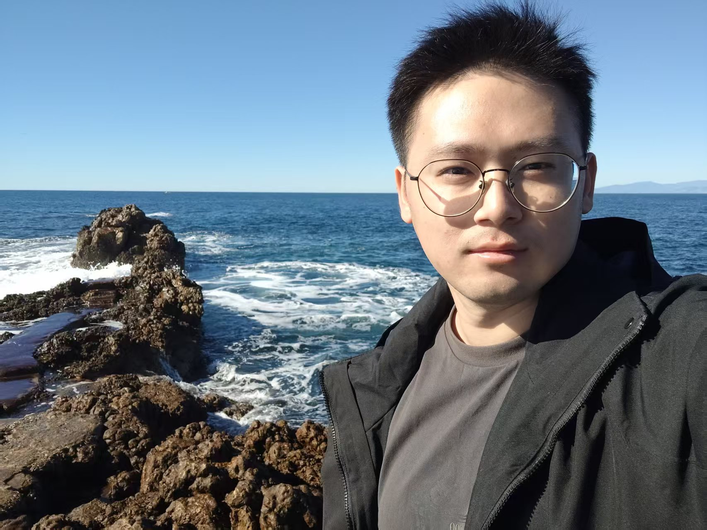

郁俊杰
成像 / 图像算法工程师 · 数学背景
具有扎实的数学基础和丰富的超声成像工程经验，擅长从物理与数学角度解决成像中的困难问题。 精通 k-wave、Field II、USTB 等超声仿真工具，对最优化理论与深度学习在图像重建中的应用有深入研究。

成像 / 图像算法工程师 · 数学背景
具有扎实的数学基础和丰富的超声成像工程经验，擅长从物理与数学角度解决成像中的困难问题。 精通 k-wave、Field II、USTB 等超声仿真工具，对最优化理论与深度学习在图像重建中的应用有深入研究。